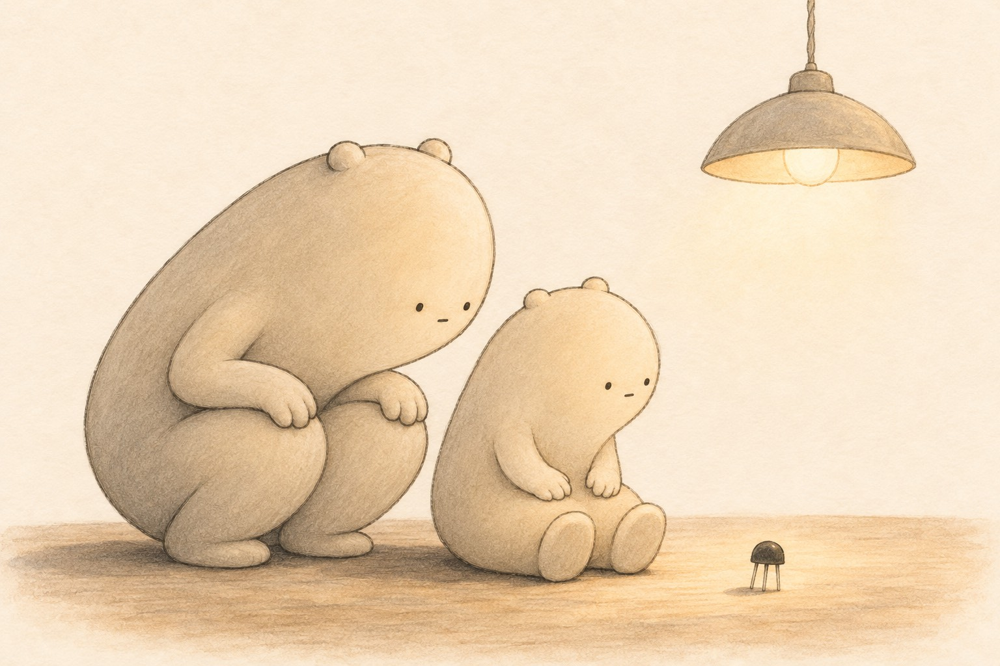

A Gate With No Hinges
Little Wonderer found a small bug on the floor,
with three skinny legs, and no head, and no more.
“It’s no bug,” said the big one. “It just looks that way.
It’s a transistor, flipping on, off, all the day.”
It hasn’t a lever. It won’t make a click.
It’s quiet as pudding, and quick, oh, so quick!
One teeny-small nudge on the leg in the middle
lets a big river through. (It’s a bit of a riddle.)
Big Wonderer said, “In one phone, I am told,
there are billions of these, far more than you’d hold.
They don’t count to ten, and they don’t count by twos.
They count ‘on’ and ‘off’ — that’s the only way they choose.”
So the little one whispered and gave it a pat:
“You’re a gate with no hinges. Imagine that!”
Then flipped every lamp in the house on and off,
saying “one,” saying “zero,” till the big one said, “Off!”